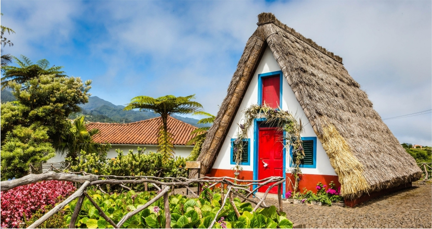

Ilha da Madeira
| A Madeira é a principal ilha do arquipélago da Madeira, uma região autónoma de Portugal frente à costa noroeste de África. A paisagem acidentada e vulcânica é atravessada por levadas (antigos canais de irrigação) com trilhos pedestres. Um trilho sobe até ao Pico Ruivo. As adegas, que produzem o vinho generoso da Madeira, estão espalhadas por toda a ilha. Na costa sul, a capital, o Funchal, é conhecida pela sua Sé do século XVI. |  |